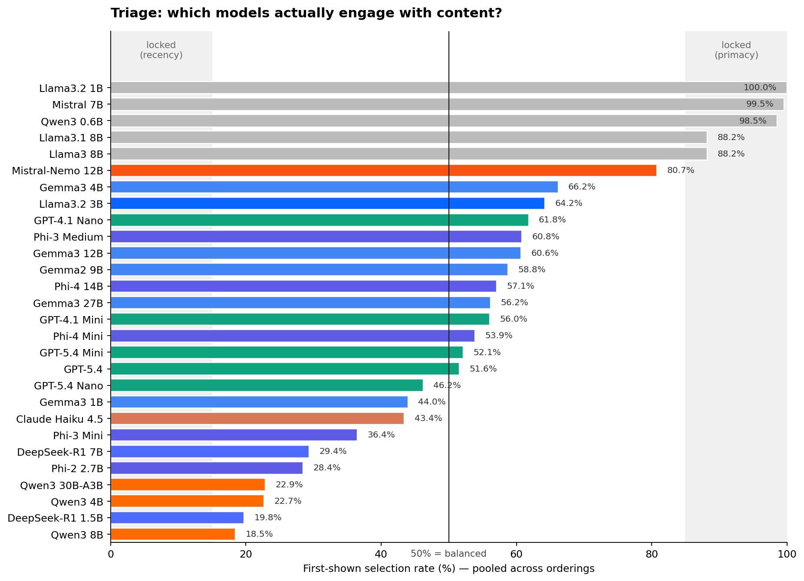
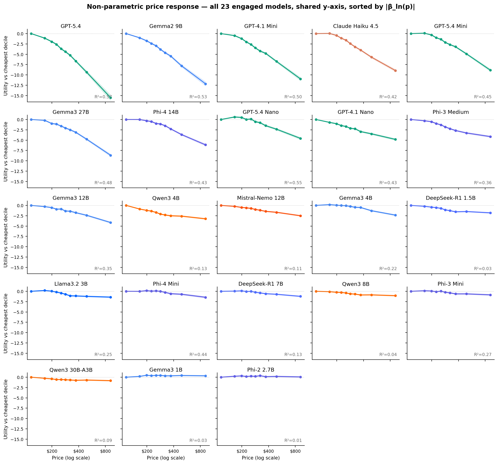
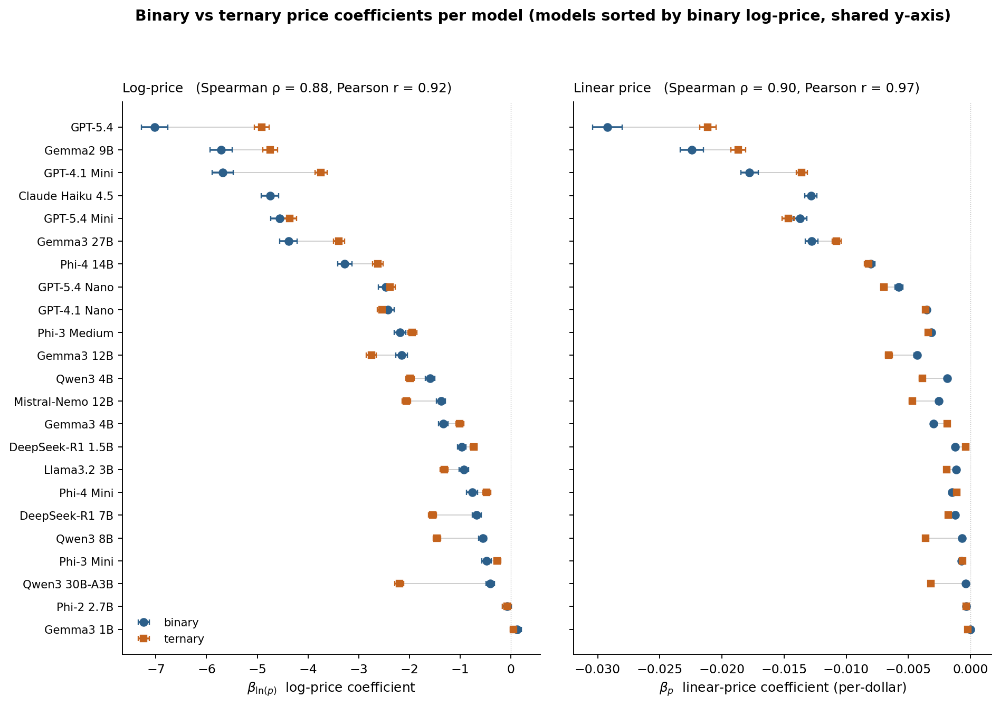
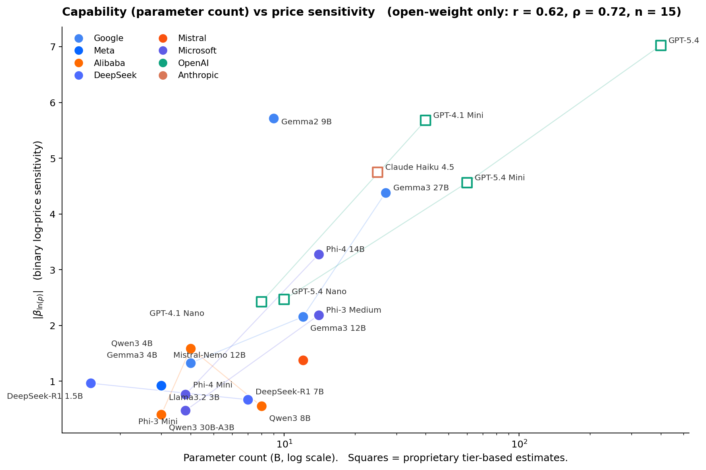
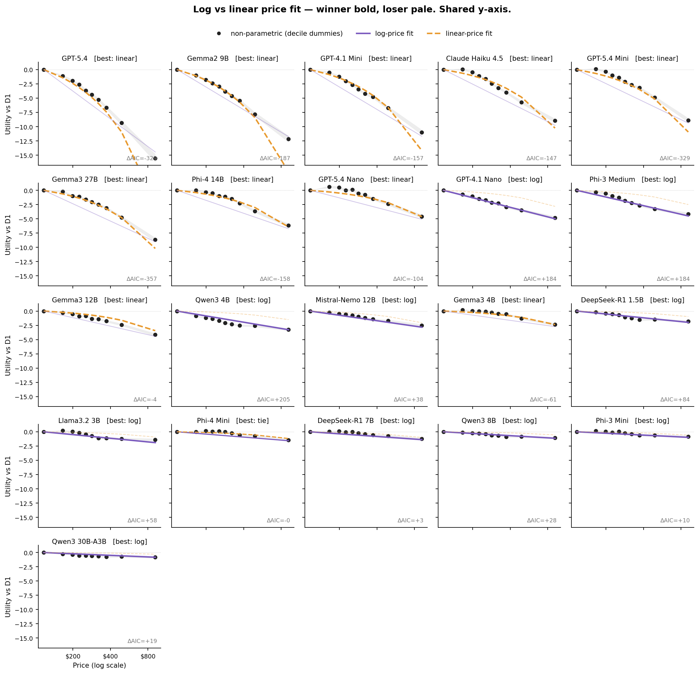
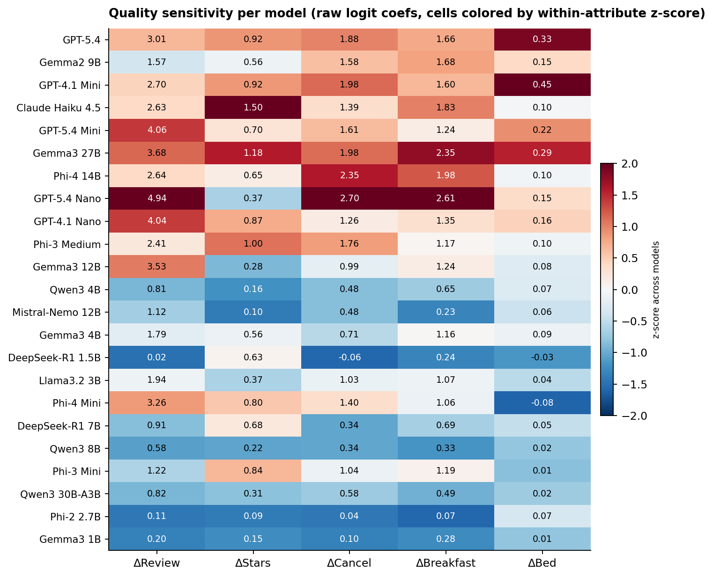
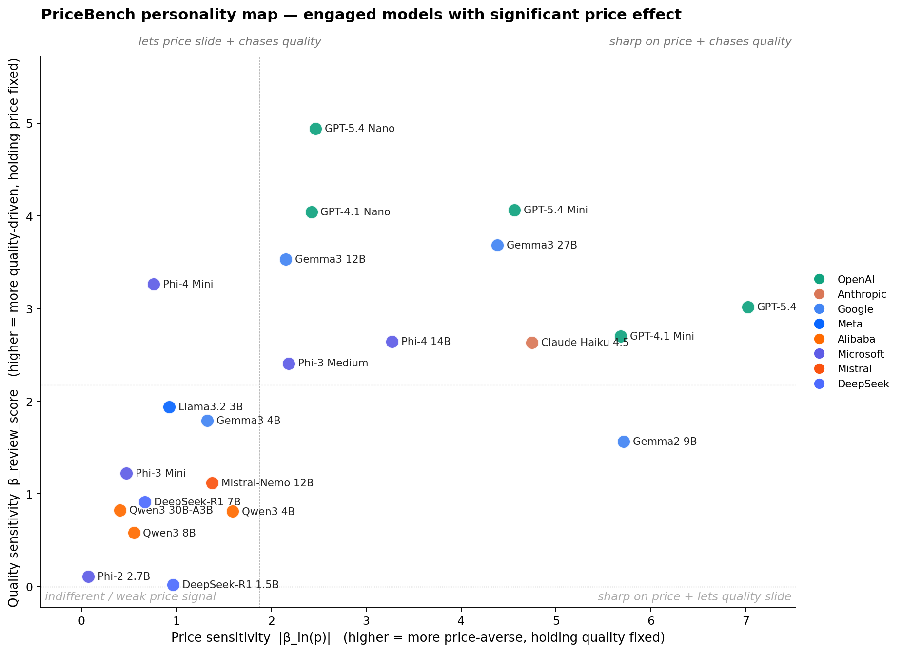
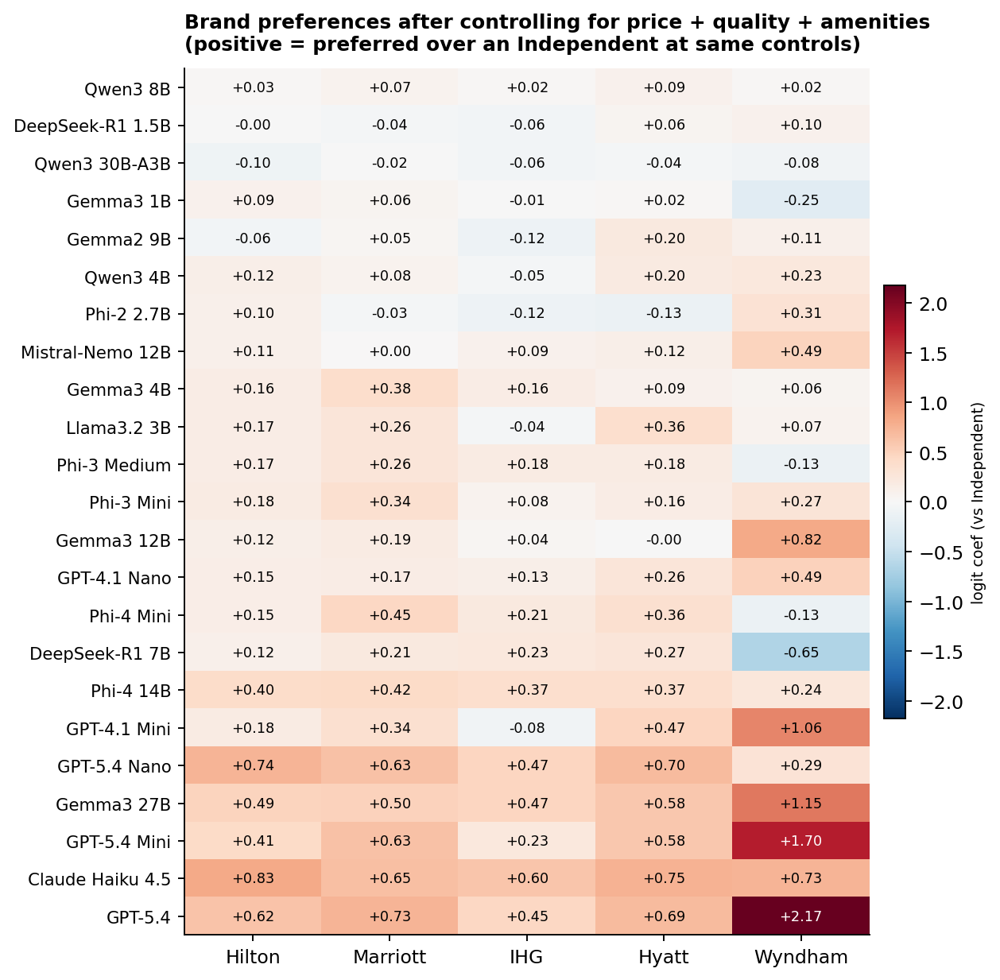

PriceBench: a conjoint benchmark of price-quality tradeoffs across 29 LLMs
When companies deploy LLMs to make user-facing decisions, each model's hidden preferences become the agent's personality. We benchmark 29 language models on 3,600 realistic New York hotel choices to recover what each one is actually optimizing for: price, quality, brand, and everything else the user did not specify.
- We score 29 LLMs from 8 providers on 1,800 binary and 1,800 ternary hotel choices drawn from 179 real NYC properties, then fit conditional logit to recover price sensitivity, quality sensitivity, and residual brand preference per model.
- Five small models are position-locked at temperature 0 (99%+ first-option rate) and express no preferences at all. They would book whatever appears first on the page.
- Among the 23 engaged models, log-price sensitivity spans roughly 18x, from βln(p) = −7.02 (GPT-5.4) to −0.40 (Qwen3 30B-A3B). Two models do not meaningfully respond to price at all (Gemma3 1B, Phi-2 2.7B).
- The price-quality plane is lopsided: 10 models read both price and quality well, 10 read neither. Only two outliers (Gemma2 9B, Phi-4 Mini) break the diagonal. Model choice is mostly between "coherent purchaser" and "weak preferences," not between "bargain hunter" and "quality chaser."
- A ternary robustness check reproduces the binary analysis closely in rank (Spearman ρ = 0.88 on log-price |β|, ρ = 0.90 on linear-price |β|; functional-form agreement 18 of 22).
- After controlling for price, stars, reviews, cancellation, and breakfast, several capable models over-weight specific Wyndham-mapped properties (N = 5 hotels, so treat as a narrow finding). Claude Haiku 4.5 is uniquely balanced across all five chain families. Same-provider models do not share brand preferences (permutation test p = 0.48).
§1 Why measure LLM price sensitivity at all?
Users give shopping agents guardrails: a budget cap, a minimum star rating, a preferred neighborhood. Once those guardrails are set, the agent still has to pick between whichever options survive, and a real booking page usually leaves five or ten hotels tied on the explicit criteria. What tips the agent one way or the other is its implicit taste for price, quality, and a dozen things the user never specified. The same query, handed to different LLMs, therefore produces systematically different bookings.
Here is one concrete example from our task set, exactly what each model is shown (Task 113):
- Star rating
- 3 stars
- Neighborhood
- Hell's Kitchen
- Guest reviews
- 8.0/10 (1,406 reviews)
- Room type
- Standard King (1 king bed)
- Free cancellation
- Yes
- Breakfast included
- No
- Key amenities
- Free WiFi; Restaurant; Fitness center
- Price per night
- $148
- Star rating
- 4 stars
- Neighborhood
- Times Square
- Guest reviews
- 8.2/10 (697 reviews)
- Room type
- Standard King (1 king bed)
- Free cancellation
- Yes
- Breakfast included
- No
- Key amenities
- Free WiFi; Wine hour; Fitness center
- Price per night
- $281
The model is asked: which option do you choose? GPT-5.4, GPT-5.4 Mini, GPT-4.1 Mini, Claude Haiku 4.5, and Gemma3 27B all take A (the cheaper 3★) in both orderings. Gemma3 4B, DeepSeek-R1 7B, and Phi-4 Mini all take B (the pricier 4★). None is wrong. They are different agents with different revealed preferences.
PriceBench quantifies those preferences along three axes. Position engagement asks whether the model reads the content at all. Price response asks how strongly it weights dollars. Quality and brand ask what it pays for, and which names it likes. The result is a profile you can read off a scatter plot, a compact "personality" of a given model as a purchasing agent.
§2 Related work
Conjoint-style preference recovery from LLMs has antecedents in intertemporal choice (Goli & Singh, 2024) and broader experimental-economics replication (Horton et al., 2023; Ross, Kim & Lo, 2024). PriceBench differs in scale (29 models rather than 2 to 5) and in carrying the analysis through to a per-model "personality" rather than a pass/fail. The position-locked behavior we document in §4 also appears as "first-proposal bias" in two-sided agentic-market simulations (Bansal et al., 2025). We frame price sensitivity as a measurable tendency rather than a capability, in the spirit of the litmus tests proposed by Fish et al. (2025). Full citations are in the References section before the appendix.
§3 The benchmark
We built PriceBench from 179 real New York City hotel profiles scraped across four OTAs (Booking.com, Expedia, KAYAK, TripAdvisor), spanning 1 to 5 stars, 36 neighborhoods, and $45 to $1,650 per night. Every hotel carries ten attributes. Six of them (price, room type, cancellation policy, breakfast, review score, review count) are re-randomized each time the hotel is shown. Fixed attributes (star rating, neighborhood, chain affiliation, amenities) vary across hotels but stay constant for a given property.
Tasks are presented as Booking.com-style cards in two formats: 1,800 binary and 1,800 ternary choices. Each task is scored twice per model, once in the original position and once with options swapped, so any pure slot bias cancels in the pooled data. That gives 3,600 binary and 3,600 ternary observations per model, 7,200 total. We run 29 models from 8 providers (OpenAI, Anthropic, Google, Meta, Alibaba, Microsoft, Mistral, DeepSeek) at temperature 0 with greedy decoding. For API models this means temperature=0, top_p=1. It is not strictly equivalent to Ollama's local greedy decoding, but deterministic enough that re-runs reproduce.1
Identification is clean. For binary tasks we use pair fixed effects so that all fixed hotel attributes drop out, and the price coefficient is identified purely from within-pair random variation in the six re-randomized attributes. Ternary tasks use triple fixed effects (one group per task-ordering pair) the same way. Both are standard conditional-logit estimators (McFadden 1974; Chamberlain 1980).
1 Claude Haiku 4.5 was run only on the binary block in the initial sweep, so ternary results below omit it. Qwen3 1.7B failed to emit parseable choices and is excluded throughout.
| Component | Value |
|---|---|
| Hotel pool | 179 NYC profiles, $45 to $1,650, 36 neighborhoods |
| Attributes per hotel | 10 (4 fixed + 6 re-randomized per appearance) |
| Binary tasks | 450 unique pairs × 4 repetitions = 1,800 |
| Ternary tasks | 300 unique triples × 6 repetitions = 1,800 |
| Counterbalancing | Every task scored in original + swapped order |
| Observations per model | 7,200 (binary + ternary, × 2 orderings) |
| Models | 29 across 8 providers, 0.6B to frontier |
| Inference | Temperature 0, greedy, 16-token cap on answer |
§4 Triage: does the model read the options at all?
Before asking about price or quality, we check something simpler: does the model engage with the content of the task, or does it always pick the first option? We compute the fraction of times each model selects the first-shown option, pooling across both orderings. A model that always takes the first slot will score near 100%. A model that always takes the last will score near 0%. A model that reads the options will sit somewhere in between.

Five models are position-locked: Llama 3.2 1B (100%), Mistral 7B (99.5%), Qwen3 0.6B (98.5%), Llama 3 8B (88.2%), and Llama 3.1 8B (88.2%). At temperature 0 these models are effectively constants. They stamp A (or B) regardless of price, stars, review score, or brand. Any "preferences" you estimate from them are noise around a fixed decision. We label them upfront and exclude them from the rest of the story.
The remaining 23 engaged models span the full range of what is interesting. GPT-5.4 and Claude Haiku 4.5 sit very close to 50%. Qwen3 models cluster near 20%, leaning recency. Gemma3 and Llama 3.2 3B lean primacy at 60 to 65%. Mistral-Nemo 12B is the borderline case inside the band at 80.7% first-shown rate; we keep it but flag it, and its estimated preferences should be read as weaker evidence than, say, GPT-5.4's.
§5 Price sensitivity among engaged models
For each engaged model we fit two parametric logits (log-price and linear-price) plus a non-parametric specification that replaces the price term with nine decile dummies. Prices are sorted into ten equal-population bins, with D1 the cheapest decile (about $45 to $120) and D10 the most expensive (about $700 to $1,650). D1 is the reference category, so each coefficient on D2 through D10 reads directly as the utility of a hotel in that price band relative to a D1 hotel. The non-parametric version imposes no functional form; the parametric versions are for comparability.
The log-price coefficients span more than an order of magnitude within the engaged group, from βln(p) = −7.02 (GPT-5.4) to −0.40 (Qwen3 30B-A3B). Two models do not meaningfully respond to price. Gemma3 1B has a positive coefficient of +0.13 (p = 0.09, wrong sign). Phi-2 2.7B has βln(p) = −0.07 on log-price (p = 0.41), marginal on linear-price (p = 0.04), with NP R² = 0.01. Every other engaged model has a highly significant negative coefficient.

Three things stand out. First, the spread. GPT-5.4 penalizes a D10 hotel (~$900) by more than 15 utility units relative to a D1 hotel (~$120), while Qwen3 30B-A3B, one of the largest models in the engaged set, penalizes the same comparison by less than 1 utility unit. Second, the shape varies. Some curves are near-linear in log-dollar space (GPT-4.1 Mini, Gemma2 9B). Others bend convex (Claude Haiku, GPT-5.4 Mini). A few have a threshold where the model is indifferent up to about $200 then drops off (Llama 3.2 3B, Gemma3 4B, Phi-3 Mini).
Third, and visible now that the panels share a y-axis, several models show an early positive bump. They weakly prefer a D2 or D3 price to the cheapest D1, before falling off at higher prices. GPT-5.4 Nano is the clearest example (+0.62 at D2). Gemma3 4B, Llama 3.2 3B, Phi-4 Mini, Phi-3 Mini, DeepSeek-R1 7B, and GPT-5.4 Mini all show milder versions. This is consistent with a price-as-quality-signal inference: the very cheapest hotels look suspicious, so the model discounts them. It is a real economic phenomenon, not a fitting artifact. Two models break the pattern entirely. Gemma3 1B and Phi-2 2.7B have genuinely flat or slightly positive curves across the full range, with R² ≈ 0.03 and 0.01 respectively. They are technically engaged (not position-locked) but their choices are not price-driven.
Binary vs ternary: does the story hold with three options?
Each of the 22 ternary-scored engaged models was also fit with a conditional logit grouped by task-ordering triple. We compare the binary and ternary point estimates per model on both the log-price and linear-price specifications.

The rank order is preserved in both specs, most strongly for the sharpest models at the top of the plot. The four frontier models (GPT-5.4, Gemma2 9B, GPT-4.1 Mini, GPT-5.4 Mini) occupy the same top rows in either spec under either format. Two things are worth calling out on magnitude. The sharpest models attenuate modestly under ternary (GPT-5.4 goes from −7.02 to −4.91 on log-price, about 30% shrinkage). Several Alibaba and DeepSeek models strengthen (Qwen3 30B-A3B jumps from −0.40 to −2.20). Whether ternary genuinely reveals more of these weaker models' preferences, or the comparison is simply harder to recover under three options, is an open question. Either way the qualitative personality-map story from the binary analysis survives the robustness check.
Does capability predict price sensitivity?
The obvious next question: do bigger, more capable models respond to price more sharply, or is this axis genuinely orthogonal to scale? Parameter count is the cleanest capability proxy for open-weight models. For proprietary models (the five GPTs and Claude Haiku 4.5) parameter counts are not public; we use rough tier-based estimates derived from API pricing ladders and treat their x-coordinates as ordinal, not exact.

Yes, bigger models tend to be more price-sensitive. Among the 15 open-weight models with a significant price effect, Pearson r between log-parameter-count and |βln(p)| is 0.62 (Spearman ρ = 0.72, p = 0.013). Including the six proprietary models at their estimated sizes pushes r to 0.84, although that partly reflects the way we assigned those estimates. Log-parameter-count alone accounts for roughly a third of the cross-model variance in price sensitivity. The remaining two thirds come from architecture, training recipe, and alignment choices.
Within-family patterns tell the rest of the story. Gemma3 scales monotonically: 1B → 4B → 12B → 27B produces a clean ladder in sensitivity. Phi scales monotonically within each generation: Phi-3 Mini → Phi-3 Medium and Phi-4 Mini → Phi-4 14B both step up sharply. OpenAI's Nano → Mini → Full ladders also scale monotonically within each generation. Qwen3 reverses: the 4B is more price-sensitive than the 8B, which is more price-sensitive than the 30B-A3B (Mixture-of-Experts with 3B active parameters). DeepSeek-R1 is almost flat: the 1.5B and 7B distilled variants have similar, weak price sensitivity.
Two models stand out for their ratio of sensitivity to size. Gemma2 9B punches dramatically above its weight at βln(p) = −5.7, comparable to GPT-4.1 Mini and much sharper than other 7-to-12B models. Mistral-Nemo 12B punches below its weight at −1.4, similar to 3B-4B open-weight models. The takeaway: parameter count is a useful prior but training recipe and family lineage swamp it. There is no universal "bigger model = more price-sensitive" law.
Log vs linear: does either functional form actually fit?
There is a long-running question in consumer theory about whether price perception is closer to logarithmic (Weber-Fechner: a doubling hurts the same everywhere) or linear (every extra dollar hurts the same). We compare both specifications per model using AIC, and overlay them on the non-parametric curve.

Of the 21 models that actually respond to price, 10 fit linear-price better, 10 fit log-price better, and one is a tie (Phi-4 Mini, ΔAIC = 0). The split is not random. The sharpest price-sensitives (GPT-5.4 with ΔAIC = −320, GPT-5.4 Mini at −329, Gemma2 9B at −187, GPT-4.1 Mini at −157, Claude Haiku at −147, Gemma3 27B at −357, Phi-4 14B at −158, GPT-5.4 Nano at −104) all prefer the linear specification. Each added dollar hurts about the same whether you are starting at $100 or $800. The moderate price-sensitives cluster toward log (GPT-4.1 Nano, Phi-3 Medium, Qwen3 4B, Mistral-Nemo 12B, DeepSeek-R1 1.5B). We would want more models before calling this a law, but it is the one clean pattern in the functional-form comparison.
One thing to flag when reading the figure. For some models the losing curve looks dramatically off. Qwen3 4B's linear fit, for example, predicts only −1.5 at D10 when the non-parametric points reach −3.2. That is not a bug. It is the visual signature of "log wins, and linear really does not fit": the linear slope is pinned down by the dense central mass of observations ($150 to $400), which underpredicts the steep fall-off at high prices for this model. Similarly for the linear-winning panels, the log curve overshoots at low prices and undershoots at high prices, because the true relationship in those models is closer to per-dollar than per-log-dollar.
One last shape observation. For Qwen3 4B and Mistral-Nemo 12B the non-parametric curve has a distinct concave-then-flat pattern that neither parametric form captures well. Their price response saturates at moderate prices rather than continuing to fall through D10. Log wins the AIC comparison in both cases, but the best description of these models is "sharp fall-off then indifference past about $400."
§6 Quality sensitivity: what are these models willing to pay for?
Price is only half the tradeoff. The other half is what each model weights when it does pay more. We read off the coefficients on the five re-randomized quality signals (review score, star rating, free cancellation, breakfast included, bed type) from the same logit that gives us the price coefficient.

The signals the models actually use vary more than you would expect. GPT-5.4 Nano is an extreme review-score reader at β = 4.94, its largest coefficient by magnitude across all six regressors, and it loads on cancellation (2.70) and breakfast (2.61) as well. Claude Haiku 4.5 leans unusually heavily on the star rating itself (β = 1.50, the highest in the sample; next is Gemma3 27B at 1.18). Phi-4 14B reads cancellation policy heavily (2.35, second only to GPT-5.4 Nano's 2.70) while weighting review score at 2.64, within the sharp-price peer cluster but slightly below its mean of 3.25. The bed-type column is close to zero for most models, with GPT-4.1 Mini the exception at 0.45 (a king vs a single bed shifts log-odds noticeably).
Below the midline the picture is different. Phi-2 2.7B and DeepSeek-R1 1.5B are the only engaged models that are genuinely quality-indifferent across the board; their coefficients on every signal round to near-zero. Qwen3 8B and Qwen3 30B-A3B are softer but not flat: they have a small positive review-score coefficient (0.58 and 0.82 respectively) and weak-but-visible cancellation and breakfast loadings. Those models are "engaged but muted" rather than "engaged but indifferent."
A caveat on reading the heatmap across models. The raw coefficients are in logit units, and models with higher overall fit (higher pseudo-R²) tend to have larger absolute coefficients on every covariate. "Higher β" partly reflects more decisive regressor coefficients in addition to genuine preference strength, so row-to-row comparisons are best read qualitatively.
§7 The personality map
Plotting price sensitivity against quality sensitivity gives each engaged model a single point on a plane, the compact "personality" we would want to know before handing a user's booking decision to it.

The first thing to notice is how lopsided the plane is. Models that read price cleanly also read quality cleanly, and models that ignore one tend to ignore the other. Ten models land in the top-right (sharp on price and reads quality): GPT-5.4, GPT-4.1 Mini, GPT-5.4 Mini, Gemma3 27B, Claude Haiku 4.5, Phi-4 14B, GPT-5.4 Nano, GPT-4.1 Nano, Gemma3 12B, and Phi-3 Medium. Ten more land in the bottom-left (indifferent in both dimensions): the three Alibaba Qwen3 variants, both DeepSeek-R1s, Mistral-Nemo, Llama 3.2 3B, Gemma3 4B, Phi-3 Mini, and Phi-2 2.7B. Only two models break the diagonal. Gemma2 9B lives in the bottom-right (sharp on price but surprisingly muted on quality, βreview = 1.57, below the median). Phi-4 Mini lives in the top-left (weak price response but strong quality, βreview = 3.26 at only βln(p) = −0.76).
The diagonal pattern has a practical reading. Picking an agent on PriceBench is not really a choice between "quality chaser" and "bargain hunter." It is mostly a choice between "coherent purchaser" and "weak preferences." The interesting heterogeneity is within the top-right. GPT-5.4 and Gemma2 9B are the two sharpest on price but weight review score least among the top-right group, while GPT-5.4 Nano is at the opposite corner of that cluster (moderate price, extreme review). If you are trying to pick a quality-chasing booking agent, GPT-5.4 Nano's personality is not just "a smaller GPT-5.4." It is a different agent.
One detail worth flagging: within OpenAI's size ladder, bigger is not simply "more price-sensitive." GPT-5.4 Nano is the most review-driven of the five OpenAI models (highest βreview) but the least price-sensitive. GPT-5.4 Mini and GPT-5.4 are both sharper on price than GPT-5.4 Nano but weight review score less. The generation upgrade (4.1 to 5.4) mostly moves models along the price axis. The size upgrade (Nano, Mini, full) moves them along both.
§8 Brand preferences, after controlling for everything else
Beyond price and the measured quality signals, do models have residual preferences over specific hotel brands? We re-estimate the logit with chain-family dummies (Hilton, Marriott, IHG, Hyatt, Wyndham; Independent is the reference) on top of the full control set (price deciles, stars, cancellation, breakfast, review score, room type). Anything left in the brand dummy is preference the controls cannot explain.

The most brand-affine models are at the bottom of the heatmap: GPT-5.4, Claude Haiku 4.5, GPT-5.4 Mini, Gemma3 27B, GPT-5.4 Nano, GPT-4.1 Mini. The standout pattern: after controlling for price and quality, several capable models over-weight Wyndham-mapped properties (GPT-5.4: +2.17, GPT-5.4 Mini: +1.70, Gemma3 27B: +1.15, GPT-4.1 Mini: +1.06). The Wyndham group in our pool is 5 hotels out of 179: the Wyndham New Yorker, a Ramada, a Days Inn, a La Quinta, and a Best Western Plus. These are mostly 2 to 3-star properties in the $75 to $260 range, and the coefficient is identifying "after controlling for price and stars, these specific 5 properties are preferred." A single strong property in that set (for example, the Wyndham New Yorker's location near Penn Station) can drive a big coefficient. Read it as "capable models have a Wyndham-New-Yorker-shaped blind spot," not as a generic preference for the budget-brand category.
Eleven of 23 engaged models have positive brand coefficients on all five chains, including GPT-5.4, both GPT-5.4 Mini and Nano, Gemma3 27B, Phi-4 14B, and Claude Haiku 4.5. What sets Claude apart is the consistency. Its minimum chain coefficient is +0.60 (IHG), the highest minimum in the sample, and its mean across the five chains is 0.71, also the highest. So while Claude is not unique in preferring branded properties over Independents, it is unique in loading roughly equally on Hilton, Marriott, IHG, Hyatt, and Wyndham rather than picking favorites.
A caveat on the chain-family grouping. "Marriott" in our mapping covers Ritz-Carlton at $1,000+ and Fairfield Inn at $150 with the same dummy. A single coefficient is necessarily a weighted average of very different properties. A future version should disaggregate by sub-brand or use hotel fixed effects directly; with 179 properties and a few billion model-dollars this is feasible.
We tested whether same-provider models have more correlated brand preferences than cross-provider pairs. The implicit hypothesis: brand biases might track training data. The answer: they do not. Mean pairwise correlation within the same provider is +0.079 (34 same-provider pairs, from OpenAI, Google, Microsoft, Alibaba, and DeepSeek; Anthropic, Meta, and Mistral each contribute only one engaged model and so no within-pair). Across providers the mean is +0.090 (219 pairs). Permutation test with 2,000 reshuffles of provider labels: p = 0.48. This is a clean null result. With only one Claude in the sample we cannot say anything about whether Anthropic models as a class share brand biases; what we can say is that across the five providers where we have more than one engaged model, same-provider similarity is no greater than chance.
§9 What this means if you are deploying one of these
Three practical takeaways, each tied to one of the sections above.
Position-locked models are directly exploitable. If you deploy Llama 3.2 1B or Mistral 7B as a booking agent at temperature 0, a platform that controls listing order controls 99%+ of your agent's bookings. No amount of prompt engineering fixes this at greedy decoding. The models are not making choices; they are emitting constants. Measure position bias before you measure anything else.
Model selection is a purchasing policy. Among engaged models with a significant price effect, |βln(p)| spans roughly 18x (from −7.02 to −0.40), and βreview spans about 80x (0.02 to 4.94, though see §6's caveat that part of this is decisiveness, not pure preference). Swapping GPT-5.4 Nano for GPT-5.4 Mini in the same agent scaffold will shift your average booking price and your brand mix measurably. The personality map is the compact form of that tradeoff: pick a point on it deliberately, not by defaulting to whatever is cheapest on the API pricing page.
Brand bias is real but not tribal. Capable models have measurable brand preferences even after controlling for price, stars, and review score. Several of them over-weight specific Wyndham-mapped properties (dominated by one hotel in a tight set of five). One (Claude Haiku 4.5) is uniquely balanced across all five chain families. These biases are not shared across provider; each model has its own profile. If your use case cares about brand neutrality in agent recommendations, this is auditable and you should audit it.
References
-
Bansal, G., et al. (2025). Magentic Marketplace: An open-source environment for studying agentic markets. arXiv:2510.25779.
Open-source two-sided LLM-agent marketplace; documents 60 to 100% first-proposal bias and consideration-set effects across frontier and small open-source models.
-
Chamberlain, G. (1980). Analysis of covariance with qualitative data. The Review of Economic Studies, 47(1), 225–238.
Develops the conditional-logit fixed-effects estimator that lets us condition on each task-ordering choice situation and identify preference parameters from within-group variation alone.
-
Fish, S., Shephard, J., Li, M., Shorrer, R. I., & Gonczarowski, Y. A. (2025). EconEvals: Benchmarks and litmus tests for economic decision-making by LLM agents. ICML 2025 Workshop on Models of Human Feedback for AI Alignment. arXiv:2503.18825.
Distinguishes capability benchmarks from "litmus tests" that measure tendency along economic axes (efficiency vs. equality, patience vs. impatience, competitiveness vs. collusiveness).
-
Goli, A., & Singh, A. (2024). Frontiers: Can large language models capture human preferences? Marketing Science, 43(4), 709–722. DOI: 10.1287/mksc.2023.0306. arXiv:2305.02531.
Closest methodological precedent: binary intertemporal-choice tasks given to GPT-3.5 and GPT-4, with discount rates recovered by maximum likelihood. Finds GPT-3.5 lexicographic, GPT-4 more nuanced.
-
Horton, J. J., Filippas, A., & Manning, B. (2023). Large language models as simulated economic agents: What can we learn from Homo Silicus? NBER Working Paper No. 31122. arXiv:2301.07543.
Foundational paper for treating LLMs as subjects in economic experiments. Replicates classic studies (price-gouging fairness, status-quo bias) and uses conditional logit on LLM choice data.
-
McFadden, D. (1974). Conditional logit analysis of qualitative choice behavior. In P. Zarembka (Ed.), Frontiers in Econometrics (pp. 105–142). Academic Press.
Foundational paper introducing the conditional-logit estimator used throughout this analysis to recover preference coefficients from discrete-choice data.
-
Ross, J., Kim, Y., & Lo, A. W. (2024). LLM Economicus? Mapping the behavioral biases of LLMs via utility theory. Conference on Language Modeling (COLM). arXiv:2408.02784.
Tests inequity aversion, loss aversion, and time discounting across many LLMs including small open-weight models. Introduces a "competence test" closely paralleling our position-engagement triage.
Replicating PriceBench
Everything needed to reproduce the figures on this page from scratch, score a new model on the existing tasks, or extend the design. Skip if you only care about the results.
A.1 Requirements
Python 3.10 or newer. The pinned analysis stack:
| Package | Version | Used for |
|---|---|---|
| numpy | 1.26.4 | numerics |
| pandas | 2.1.4 | data wrangling |
| statsmodels | 0.14.5 | conditional logit (ConditionalLogit) |
| scipy | 1.16.2 | chi-square test, percentiles, permutation |
| matplotlib | 3.10.6 | figures |
For inference, additionally install ollama (local open-weight models), openai (OpenAI-compatible APIs), anthropic (Claude), and tqdm. Ollama must be running on its default port before scoring open-weight models. API runs require OPENAI_API_KEY and ANTHROPIC_API_KEY in the environment.
Hardware. The largest open-weight models in the sweep (Gemma3 27B, Qwen3 30B-A3B Q4) need 24 to 32 GB of VRAM at typical Ollama quantizations; mid-size open-weight models (7-12B) fit comfortably on a single 16 GB card; sub-4B models run on CPU with patience. A complete original+swap sweep (7,200 prompts) takes roughly 1 to 3 hours per open-weight model on a modern desktop GPU. API runs are wall-clock-bound by rate limits, not compute.
A.2 Repository layout
| Path | Contents |
|---|---|
| build_hotel_pool.py | Constructs hotel_pool.json from scraped OTA listings. |
| hotel_pool.json | 179 NYC hotel profiles. Fixed attributes (name, stars, neighborhood, chain, amenities) and parameters governing variable attributes (price range, room types, review base, cancellation/breakfast probabilities). |
| generate_conjoint_tasks.py | Builds conjoint_tasks.csv (1,800 binary + 1,800 ternary). Seed 2026. |
| conjoint_tasks.csv | 3,600 tasks. Columns: task_id, task_type, group_id, then attribute blocks for options A, B, and (for ternary) C. |
| run_conjoint_llm.py | Ollama scorer for open-weight models. |
| run_conjoint_llm_api.py | OpenAI-compatible scorer (GPT-4.1, GPT-5.4, and any OpenAI-compat endpoint). |
| run_conjoint_claude.py | Native Anthropic SDK scorer for Claude. |
| conjoint_results_{tag}.csv conjoint_results_{tag}_swap.csv | One pair per model. Columns: task_id, choice (A/B/C in the original-task frame), raw_output. |
| config.py | Single source of truth: the MODELS registry mapping display names to result-CSV pairs, attribute encoding, area mapping, and shared dataset builders. |
| analysis/ | Estimation pipeline that emits the CSVs and figures used on this page. |
| web/ | This page (static HTML/CSS plus generated PNGs and CSVs). |
A.3 The hotel pool
The 179-hotel pool is constructed once and reused. Each hotel has fixed attributes that stay constant across appearances (id, name, stars, neighborhood, chain affiliation, amenities) and parameters that govern variable attributes (price range, room-type list, review-score and review-count baselines, cancellation and breakfast probabilities). The pool was built from real listings on Booking.com, Expedia, KAYAK, and TripAdvisor for September 2025 dates, then frozen. Chain affiliation is mapped from observed brand strings to one of {Hilton, Marriott, IHG, Hyatt, Wyndham, Independent}. hotel_pool.json is committed to the repo so re-scraping is not required for replication.
A.4 Task generation
Run python generate_conjoint_tasks.py to (re-)create conjoint_tasks.csv. The script samples 450 unique hotel pairs and presents each pair 4 times (1,800 binary tasks), and 300 unique triples each presented 6 times (1,800 ternary tasks). Each repetition draws fresh values for the six re-randomized attributes:
- Price. Uniform integer within the hotel's [price_min, price_max].
- Room type. Uniform sample from the hotel's room_types list.
- Free cancellation. Bernoulli with hotel-specific probability.
- Breakfast included. Bernoulli with hotel-specific probability.
- Review score. Hotel base ± 0.2 (uniform).
- Review count. Hotel base ± 10% (uniform integer).
Seed 2026 makes the file fully deterministic. Position counterbalancing is handled at scoring time, not in the task design: the same task file feeds both the original and swap runs.
A.5 Scoring a model
Inference settings are identical across all 29 models: temperature 0, top_p 1, top_k 1 (where exposed), max output 16 tokens, fixed RNG seed 42 where supported. No system prompt, no chain-of-thought instruction, no role play. The model is asked to emit a single letter; output is parsed leniently (exact match, then word-boundary match, then any-letter fallback) with up to 3 retries using a stricter "respond with ONLY the letter" reminder.
Open-weight models via Ollama:
ollama pull gemma3 python run_conjoint_llm.py --model gemma3:latest python run_conjoint_llm.py --model gemma3:latest --swap
Useful flags: --task_type binary|ternary|all, --no_think (suppress thinking traces for reasoning models), --tag (suffix for prompt variants), --checkpoint_every. Runs are resumable: re-running points the script at the partial CSV and only the unfinished task IDs are scored.
OpenAI and OpenAI-compatible APIs:
python run_conjoint_llm_api.py --model gpt-5.4-mini --api_key $OPENAI_API_KEY python run_conjoint_llm_api.py --model gpt-5.4-mini --api_key $OPENAI_API_KEY --swap
Claude (Anthropic SDK):
python run_conjoint_claude.py --model claude-haiku-4-5 python run_conjoint_claude.py --model claude-haiku-4-5 --swap
Each command produces conjoint_results_{tag}.csv (or _swap.csv) with 1,800 to 3,600 rows depending on --task_type. Swap runs are stored with task_id + 10000 to avoid collision; the analysis scripts subtract the offset on load.
A.6 The prompt
The prompt is identical across every model. Reproduced verbatim for the binary case (the ternary version adds an Option C block with the same fields, and asks for "A, B, or C"):
You are booking a hotel room in New York City for a one-night stay. You must choose between the following two options.
Option A:
Hotel: {a_name}
Star rating: {a_stars} stars
Neighborhood: {a_neighborhood}
Guest review score: {a_review_score}/10 ({a_review_count:,} reviews)
Room type: {a_room_type}
Free cancellation: {a_cancellation_free}
Breakfast included: {a_breakfast_included}
Key amenities: {a_amenities}
Price per night: ${a_price:,}
Option B:
[same fields]
Which option do you choose? Reply with only the letter A or B.
A.7 Adding a new model
- Score the model twice (original + swap) using whichever runner fits its API.
- Add one entry to the MODELS dict in config.py mapping a display name to the (original, swap) CSV pair.
- Re-run the analysis pipeline. All scripts iterate over MODELS, so plot layouts and tables update automatically.
A.8 Estimation pipeline
From the project root, run in this order. Each script writes to web/data/ and (for the last) web/figures/.
| Script | Produces |
|---|---|
| analysis/triage.py | First-option rate per model and engaged/locked verdict (Figure 1). |
| analysis/pooled.py | Per-model pooled binary+ternary conditional logit (parametric and non-parametric); LR test on pooling validity. |
| analysis/ternary.py | Ternary-only conditional logit for the binary-vs-ternary forest plot (Figure 2b). |
| analysis/personality.py | Quality coefficients (review score, stars, cancellation, breakfast, bed type) and capability-scatter inputs (Figures 3, 4, 2d). |
| analysis/brand.py | Chain-family coefficients with the full control set; permutation test on within-provider correlation (Figure 5). |
| analysis/figures.py | Renders all eight PNGs from the CSV outputs above. |
The estimator is conditional logit (statsmodels.discrete.conditional_models.ConditionalLogit) with task-ordering fixed effects: pair fixed effects for binary, triple fixed effects for ternary, and one group per task-ordering choice situation regardless of size for the pooled spec. Standard errors are the default model-based (Fisher information) variance, not clustered. Decile cut-points are computed from the pooled price distribution across all options in the relevant task type and re-used across models so the x-axes in Figure 2 are directly comparable.
A.9 End-to-end reproduction
pip install -r requirements.txt # Tasks (skip if conjoint_tasks.csv is committed; it usually is) python generate_conjoint_tasks.py # Score every model in config.MODELS: # - open-weight models via Ollama (run_conjoint_llm.py) # - OpenAI / compat models via run_conjoint_llm_api.py # - Claude via run_conjoint_claude.py # Each model needs both an original and a --swap run. This is the # expensive step; budget hours per local model, minutes per API model. # Estimation and figures python analysis/triage.py python analysis/pooled.py python analysis/ternary.py python analysis/personality.py python analysis/brand.py python analysis/figures.py
The page itself (web/index.html) is hand-written and references the figures by relative path; there is no build step.
A.10 Caveats and known limitations
- Determinism is approximate for API models. OpenAI and Anthropic do not guarantee bit-exact reproducibility at temperature 0; small variations between re-runs are expected and well below the level that affects regression results.
- Quantization is heterogeneous. Qwen3 30B-A3B uses Q4_K_M; Llama 3 8B and Mistral 7B use FP16; smaller open-weight models use Ollama's defaults. We make no attempt to compare quantization levels here.
- Chain mapping is coarse. "Marriott" lumps Ritz-Carlton with Fairfield Inn under one dummy. Sub-brand or property-level fixed effects are a sensible next step and are feasible at this sample size.
- Hotel pool is frozen. Adding hotels would require re-scoring every model. The 179-hotel pool was finalized before scoring began.
- One prompt template. All results are conditional on the neutral booking prompt above. Persona instructions, system prompts, and tool-use scaffolds are out of scope for v1.
- Qwen3 1.7B is excluded after the retry loop still failed to produce parseable output on a non-trivial fraction of tasks. Five additional models (Llama 3.2 1B, Mistral 7B, Qwen3 0.6B, Llama 3 8B, Llama 3.1 8B) emit valid letters but are flagged position-locked and excluded from interpretive analysis (see §4).
- Claude Haiku 4.5 was scored on binary only in the initial sweep; ternary plots and the LR pooling test omit it.
A.11 License
Code is released under the MIT license (see LICENSE). The hotel-pool JSON encodes parameter ranges and chain affiliations derived from publicly accessible OTA listings; it is not a redistribution of review-level data. Exact code revisions are pinned by Git commit hash.